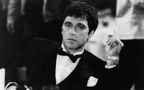
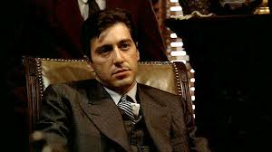
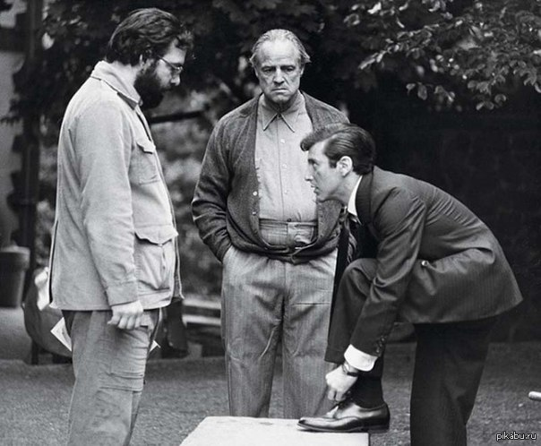
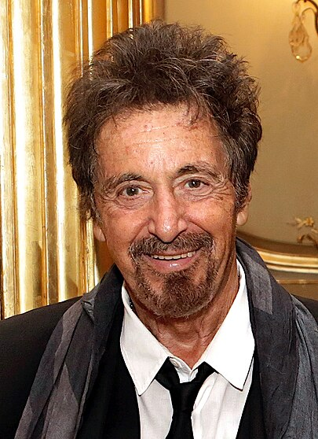

Молодой Аль-Пачино в фильме Лицо со Шрамом
Альфре́до Джеймс (Аль) Пачи́но (англ. Alfredo James (Al) Pacino; род. 25 апреля 1940, Восточный Гарлем, Манхэттен, Нью-Йорк)
— американский актёр, режиссёр и сценарист.
Наиболее знаменит своими ролями гангстеров — Майкл Корлеоне в трилогии «Крёстный отец» Фрэнсиса Форда Копполы и Тони Монтана в фильме Брайана Де Пальма «Лицо со шрамом» (1983).
Роль Фрэнка Слейда в фильме «Запах женщины» (1992) принесла актёру «Оскар» в номинации Лучшая мужская роль,
что стало его первым успехом после семи предыдущих номинаций.
Аль-Пачино в роли Майкла Корлеоне
в фильме Крестный Отец
Аль-Пачино на сьемках фильма
Крестный Отец Рядом Режиссер
